林軒毅 Ivan Lin
作品展示
軟體工具開發
客製化工具開發
自動材質配對產生器 [2022] - Houdini, Hou, Python, Redshift
- 使用Python/Hou 將Kitbash3D模型材質檔案透過命名原則自動產生Redshift material, 代替手動配對大量檔案的過程
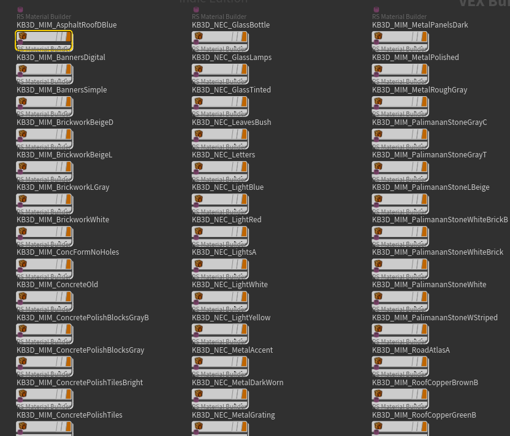
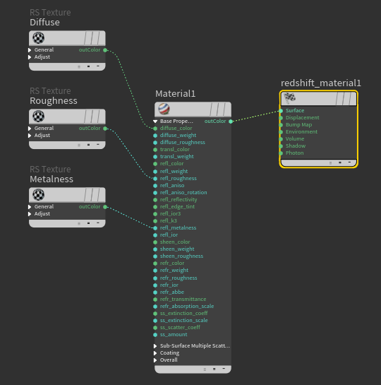
程序畫建模工具 [2022] - Houdini, Vex
- 使用Houdini程序化流程產生客製化柱狀、線狀及螺絲模型, 並設計避免模型穿插之偵測功能
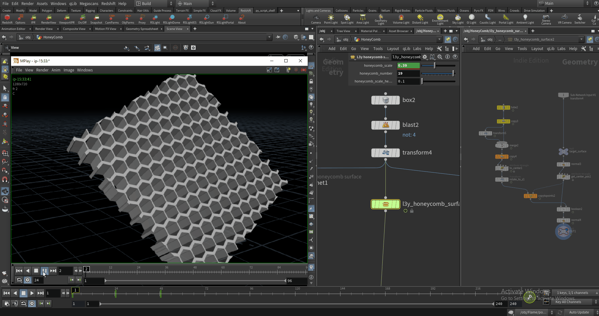
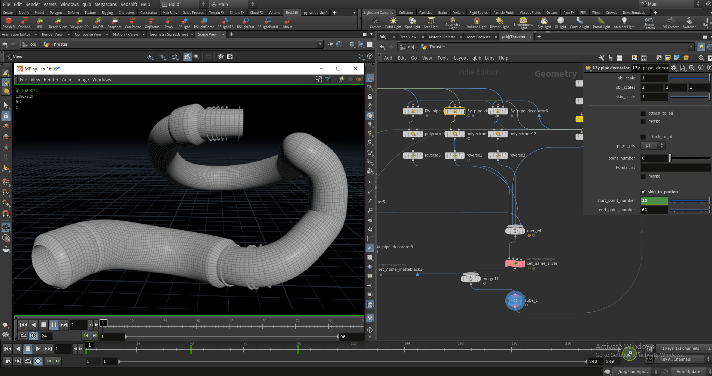
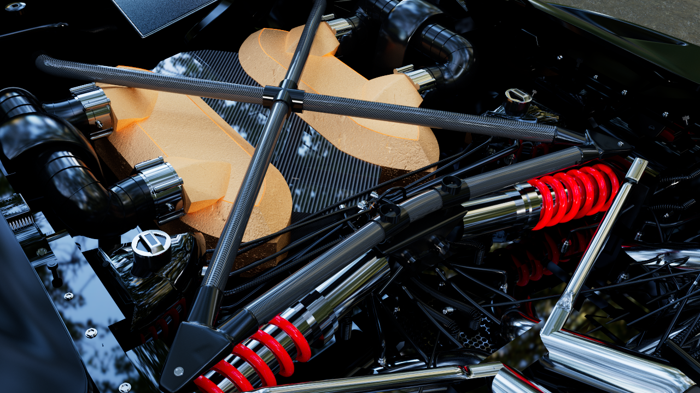
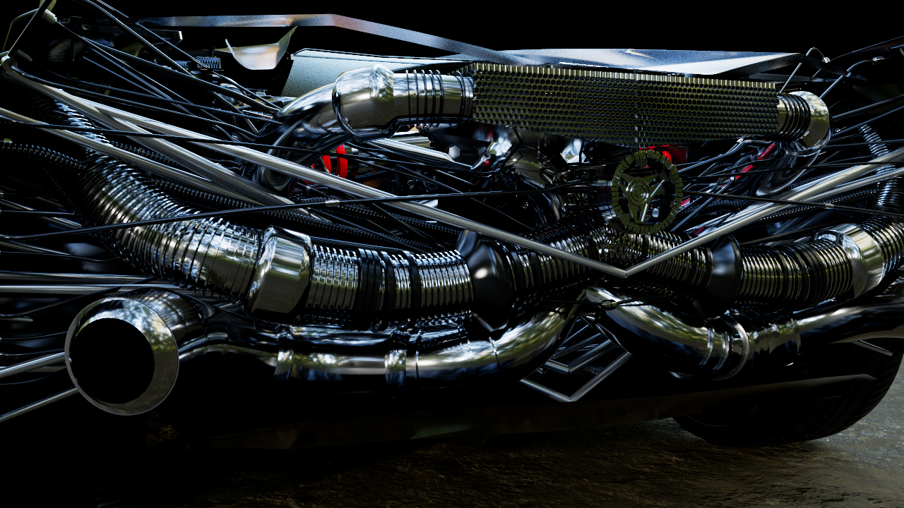
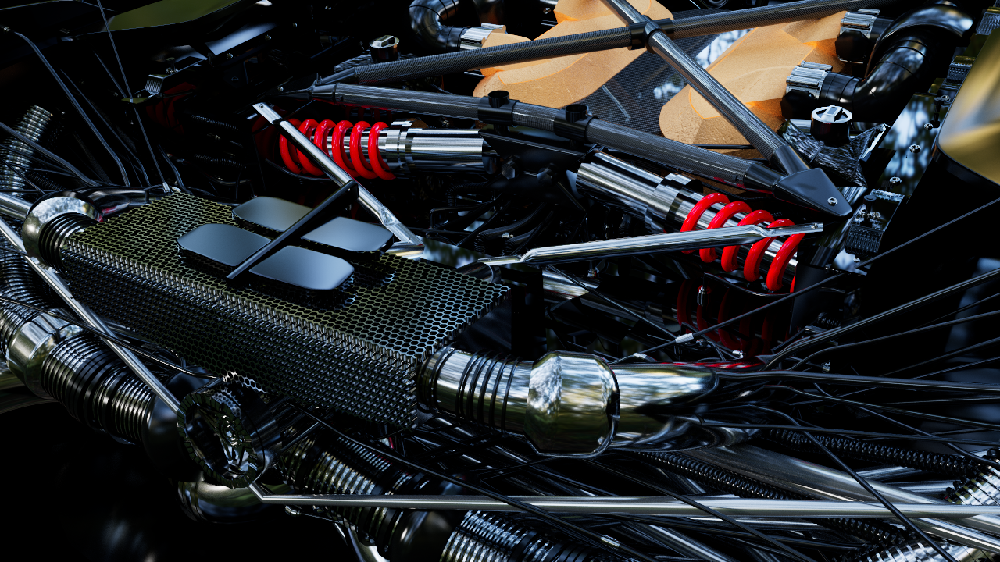
Photogrammetry 數位替身 [2019] - Houdini, Zbrush, AfterEffects, AutodeskRecap
- 使用Photogrammetry技術產生數位替身並導入3D軟體進行特效製作
製作過程
建模 : 以三角度拍攝鞋子360度環繞照(三角度各約30張)，運用Photogrammetry技術使用Autodesk Recap軟體製作成3D模型。
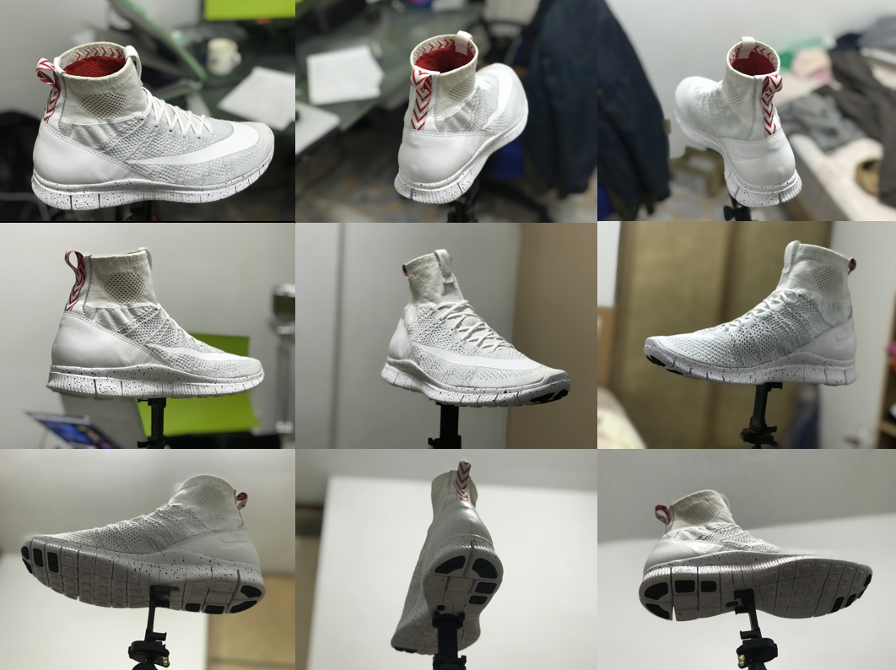
模型製作完成後使用Zbrush軟體進行Retopo和製作UV Maps.
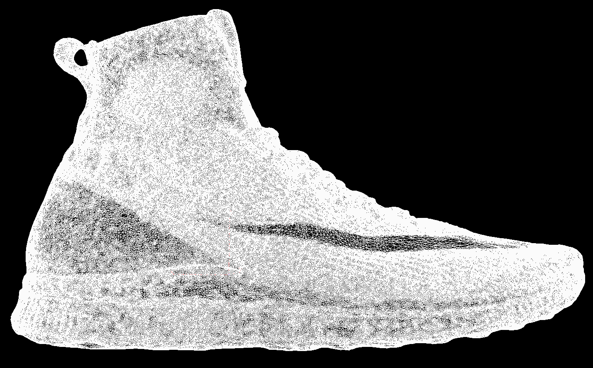
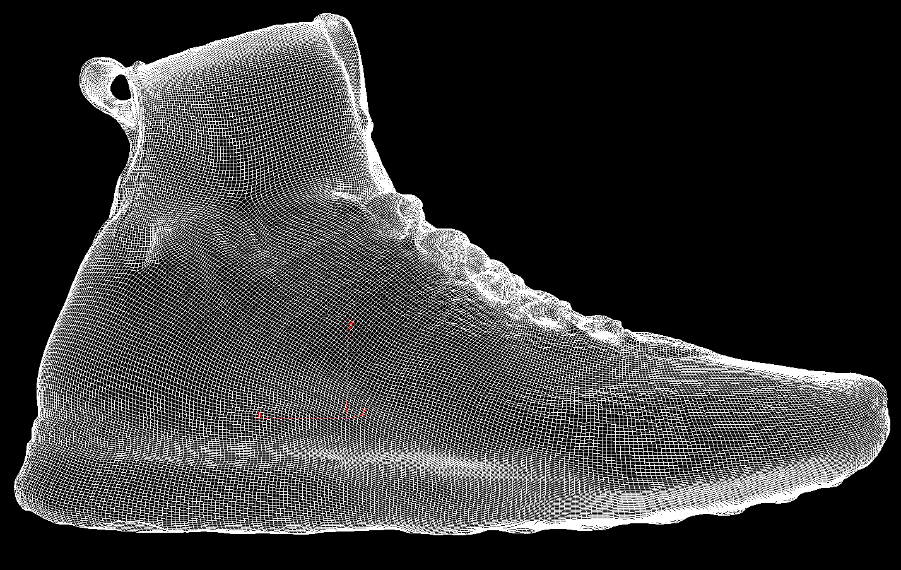
before
after
材質 : 將autodesk recap所輸出的texture使用XNormal來Bake textures.
before
after
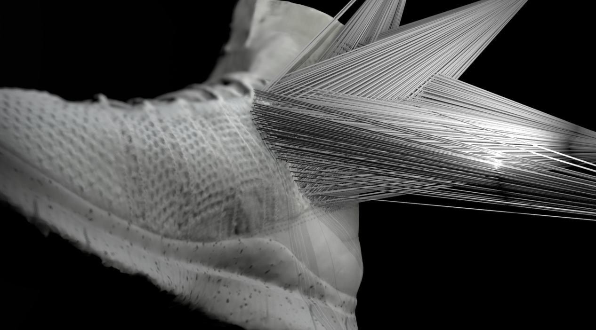
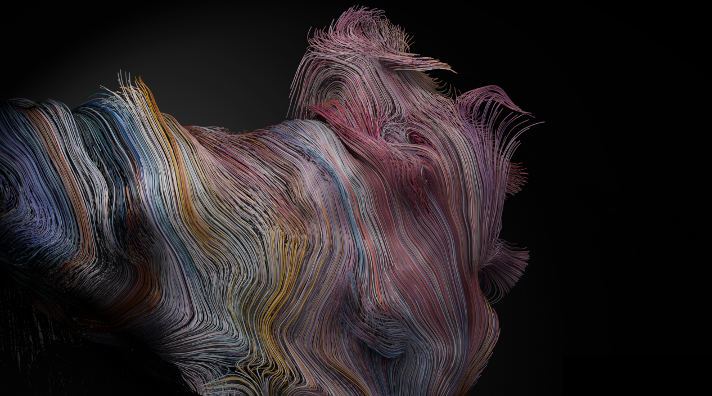
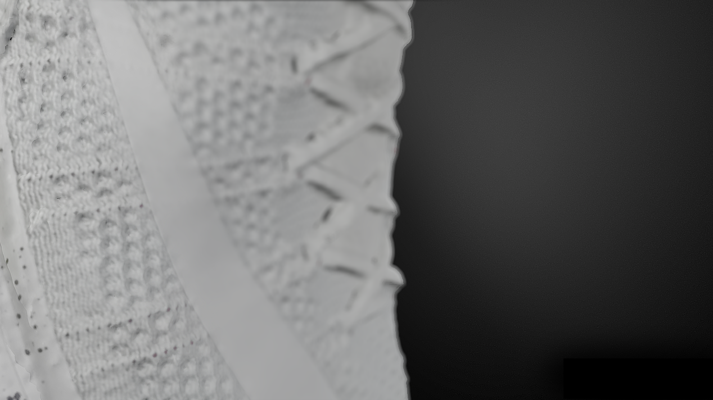
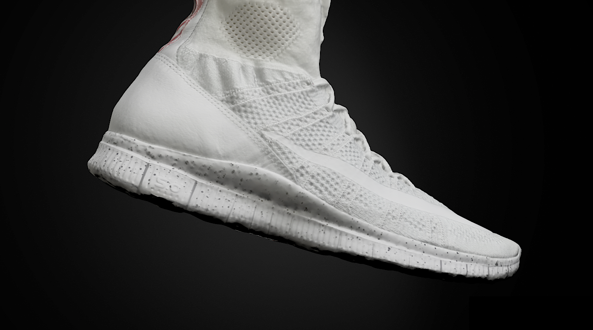
特效 : 使用Houdini進行特效、動畫的製作。
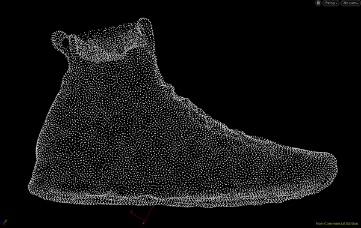
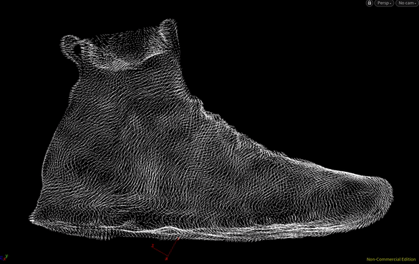
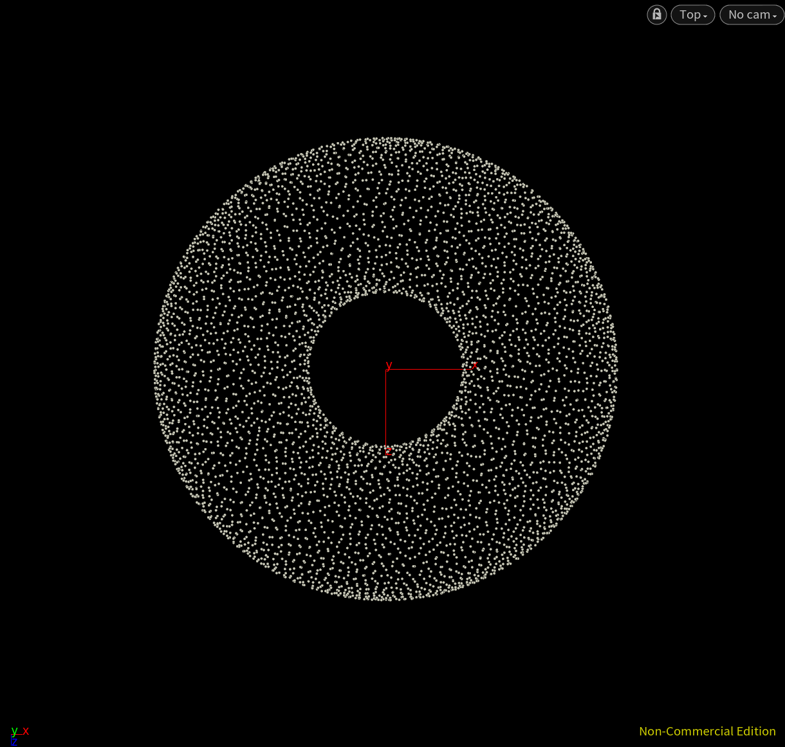
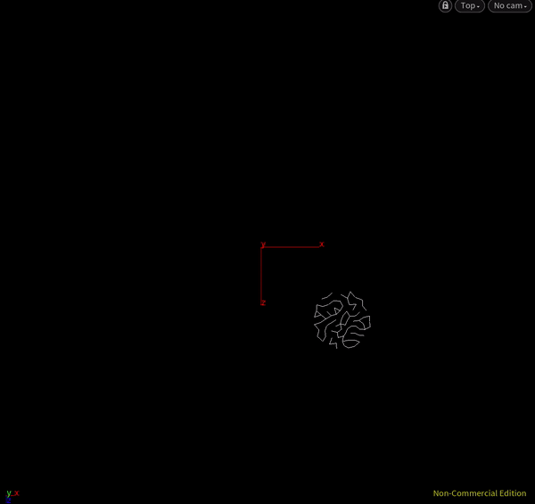
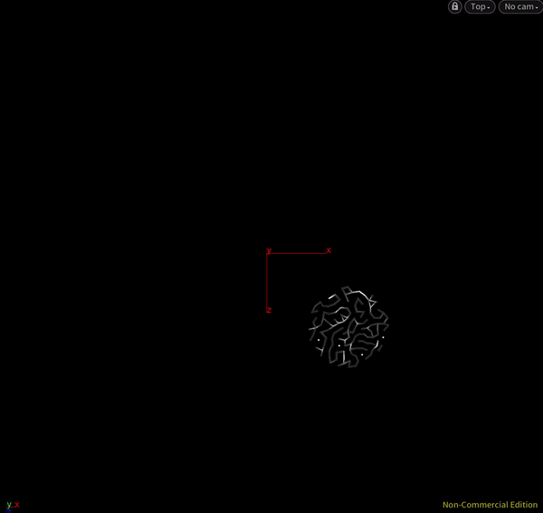